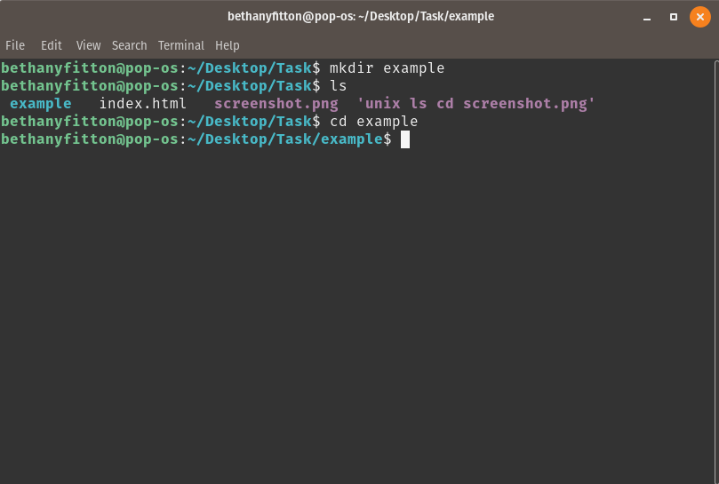
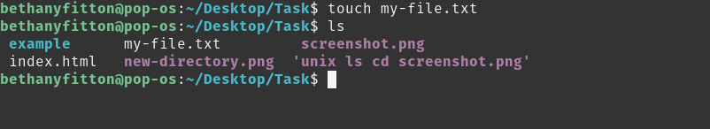
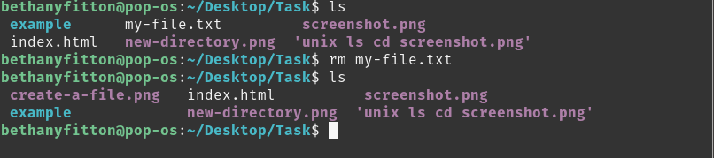

Click here to find a useful worksheet for beginner coders
To list the files in a directory type "ls" - To change directory type "cd" - as per the screenshot below

To create a new directory type "mkdir" followed by the name of your new folder, in the example below my new folder is called "example" so I typed "mkdir example"
To create a new file type "touch" followed by the file name & type - in the example below I typed " touch my-file.txt"
To remove a file type "rm" followed by the file name you wish to remove - in the example below I typed "rm my-file.txt"
